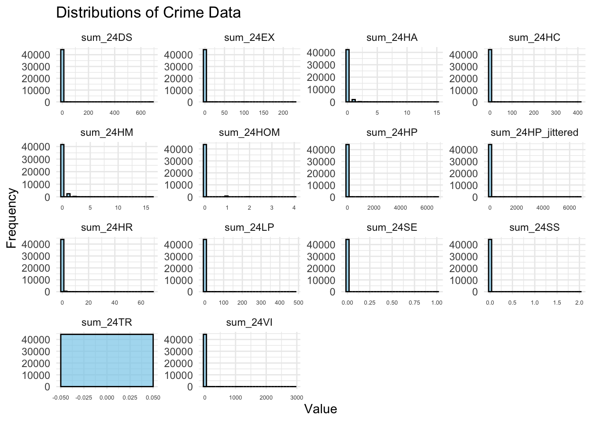
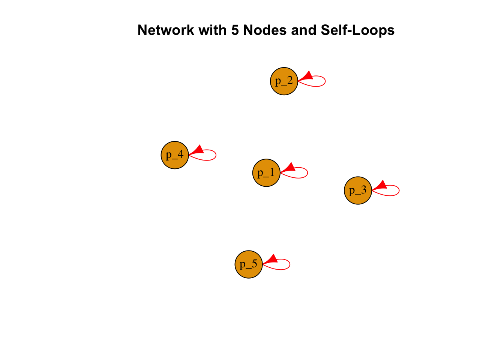

A skewness of \(( 0 )\) indicates a perfectly symmetric distribution. Positive skewness \(( g_1 > 0 )\) signifies a longer tail on the right side of the distribution, while negative skewness \(( g_1 < 0 )\) indicates a longer tail on the left. The code below calculates skewness for all numeric columns in delitos_data and presents the results in a formatted table:
A kurtosis of \(( 0 )\) (excess kurtosis) indicates tail behavior similar to a normal distribution. Positive kurtosis \(( g_2 > 0 )\) signifies heavier tails and more outliers (leptokurtic), while negative kurtosis \(( g_2 < 0 )\) indicates lighter tails and fewer outliers (platykurtic).
The coefficient of variation is particularly useful for comparing the variability of datasets with different units or widely different means. A lower CV indicates less variability relative to the mean, while a higher CV indicates greater variability.
# Compute the range for first standard deviationlower_bound <- mean_val - std_devupper_bound <- mean_val + std_devpaste0('lower_bound: ', round(lower_bound, 2), ' - upper_bound: ', round(upper_bound, 2))
[1] "lower_bound: -34.51 - upper_bound: 37.82"
# Count the number of points within 1 standard deviationwithin_1sd <-sum(delitos_data$sum_24HP >= lower_bound & delitos_data$sum_24HP <= upper_bound, na.rm =TRUE)percentage_1sd <- (within_1sd /nrow(delitos_data)) *100paste0('within_1sd: ', round(within_1sd, 2), ' - percentage_1sd: ', round(percentage_1sd, 2))
[1] "within_1sd: 44230 - percentage_1sd: 99.79"
# Create histogramggplot(delitos_data, aes(x = sum_24HP)) +geom_histogram(binwidth =5, fill ="blue", alpha =0.5, color ="black") +# Add vertical lines for mean, median, and 1st SDgeom_vline(aes(xintercept = mean_val), color ="red", linetype ="dashed", size =1.2) +#geom_vline(aes(xintercept = median_val), color = "green", linetype = "dashed", size = 1.2) +geom_vline(aes(xintercept = lower_bound), color ="purple", linetype ="dashed", size =1) +geom_vline(aes(xintercept = upper_bound), color ="purple", linetype ="dashed", size =1) +# Labels and titlelabs(title ="Histogram of AUTOMOTORES with Mean, and 1SD Range",x ="AUTOMOTORES Values", y ="Frequency") +# Add annotation for 1SD rangeannotate("text", x = mean_val, y =10, label =paste(round(percentage_1sd, 1), "1SD", sep =""), color ="black", size =5, hjust =0.5, vjust =-1) +theme_minimal()
The Median Absolute Deviation (MAD) is a robust measure of variability that quantifies the dispersion of a dataset. It is defined as the median of the absolute deviations from the median of the data:
This ratio provides a scale-independent measure of variability, making it useful for comparing the dispersion of datasets with different units or scales. A higher MAD/Median ratio indicates greater relative variability.
# Compute the range for first standard deviationlower_bound <- median_val - mad_valupper_bound <- median_val + mad_valpaste0('lower_bound: ', round(lower_bound, 2), ' - upper_bound: ', round(upper_bound, 2))
[1] "lower_bound: 0 - upper_bound: 0"
# Count the number of points within 1 MADwithin_1mad <-sum(delitos_data$sum_24HP >= lower_bound & delitos_data$sum_24HP <= upper_bound, na.rm =TRUE)percentage_1mad <- (within_1mad /nrow(delitos_data)) *100paste0('within_1mad: ', round(within_1mad, 2), ' - percentage_1mad: ', round(percentage_1mad, 2))
[1] "within_1mad: 24188 - percentage_1mad: 54.57"
# Create histogramggplot(delitos_data, aes(x = sum_24HP)) +geom_histogram(binwidth =5, fill ="blue", alpha =0.5, color ="black") +# Add vertical lines for mean, median, and 1st SD#geom_vline(aes(xintercept = mean_val), color = "red", linetype = "dashed", size = 1.2) +geom_vline(aes(xintercept = median_val), color ="green", linetype ="dashed", size =1.2) +geom_vline(aes(xintercept = lower_bound), color ="purple", linetype ="dashed", size =1) +geom_vline(aes(xintercept = upper_bound), color ="purple", linetype ="dashed", size =1) +# Labels and titlelabs(title ="Histogram of AUTOMOTORES with Median, and 1MAD Range",x ="AUTOMOTORES Values", y ="Frequency") +# Add annotation for 1SD rangeannotate("text", x = median_val, y =10, label =paste(within_1mad, "points (", round(percentage_1mad, 1), "1MAD", sep =""), color ="black", size =5, hjust =0.5, vjust =-1) +theme_minimal()
The covariance matrix \(( \Sigma )\) captures the pairwise covariances between variables in a dataset. For a dataset \(( X )\) with \(( n )\) observations and \(( p )\) variables, the covariance matrix is defined as:
To handle skewed data or reduce the impact of outliers, we apply a log transformation to the data. Let \(( Y = \log(X + 1) )\), where \(( \log )\) is applied element-wise and \(( 1 )\) is a matrix of ones to handle zeros. The log-transformed covariance matrix \(( \Sigma_{\text{log}} )\) is:
log_mean <-mean(log_x) # Compute mean in log-spaceprint(log_mean)
[1] 0.5134252
log_mean_exp <-exp(log_mean) # Convert back to original scaleprint(log_mean_exp)
[1] 1.671005
# Create the comparison tablecomparison_table <-data.frame(Index =seq_along(x), # Just an index for x-axisOriginal_Value = x,Log_Value = log_x)p1 <-ggplot(comparison_table, aes(x = Original_Value, y = Log_Value)) +geom_line(color ="gray70", size =0.7, alpha =0.5) +# Thin line connecting pointsgeom_point(alpha =0.7, color ="blue") +# Scatter points with transparencylabs(title ="Scatter Plot: Original vs. Log-Transformed Values",x ="Original Values",y ="Log-Transformed Values" ) +theme_minimal()# Add marginal histogramggMarginal( p1,type ="histogram", # Add marginal histogramsbins =40, # Number of bins for the histogrammargins ="both", # Add histogram to both x and y marginssize =5, # Size of the histograms relative to the scatter plotfill ="gray", # Fill color for the histogramcolor ="black", # Outline color for the histogramalpha =0.5# Transparency)
Euler steps describe how many multiplicative steps of \(( e )\) are needed to reach a given value.
For example, in our dataset:
Original Values: 0, 3, 1, 0, 0, 0
Log Values: 0, 1.39, 0.69, 0, 0, 0
Each log-transformed value represents the number of times we need to multiply 1 by \(( e )\) to reach the original value:
Measure Raw_Data Log_Transformed_Data
1 Mean 1.650581 0.5134252
2 Median 0.000000 0.0000000
3 Standard Deviation 36.164573 0.6903587
4 MAD 0.000000 0.0000000
# Transform the data to a long format for ggplotdelitos_long <- delitos_data %>%st_drop_geometry() %>%select(contains('24')) %>%pivot_longer(cols =everything(), names_to ="Crime Type", values_to ="Value")# Create faceted histogramsggplot(delitos_long, aes(x = Value)) +geom_histogram(bins =30, fill ="skyblue", color ="black", alpha =0.7) +facet_wrap(~`Crime Type`, scales ="free") +# Facet by crime typetheme_minimal() +labs(title ="Distributions of Crime Data",x ="Value",y ="Frequency" ) +theme(axis.text.x =element_text(size =5) # Reduce the font size of X-axis text )

# Transform the data to long format and apply log transformationdelitos_long_log <- delitos_data %>%st_drop_geometry() %>%select(contains('24')) %>%mutate(across(everything(), ~log(.x), .names ="{col}")) %>%# Log transform (log(x + 1) to avoid log(0))pivot_longer(cols =everything(), names_to ="Crime Type", values_to ="Log Value")# Create faceted histograms for log-transformed valuesggplot(delitos_long_log, aes(x =`Log Value`)) +geom_histogram(bins =30, fill ="skyblue", color ="black", alpha =0.7) +facet_wrap(~`Crime Type`, scales ="free") +# Facet by crime typetheme_minimal() +labs(title ="Log-Transformed Distributions of Crime Data",x ="Log Value",y ="Frequency" ) +theme(axis.text.x =element_text(size =3) # Reduce the font size of X-axis text )
Redundant variables provide little additional information due to high correlation with others, leading to multicollinearity in models.
Mathematically, redundancy is detected using the covariance matrix \(\Sigma\), whose eigenvalues \(\lambda_i\) and eigenvectors \(v_i\) capture variance directions. A small eigenvalue \(\lambda_{\min} \approx 0\) suggests a near-linear dependency:
\(\Sigma v_{\min} = \lambda_{\min} v_{\min}\)
The eigenvector \(v_{\\min}\) identifies the redundant variable combination.
To confirm, we fit a regression model where one variable \(y\) is explained by others:
To quantify redundancy, we compute Variance Inflation Factors (VIFs) for each predictor \(x_j\):
\(VIF_j = \frac{1}{1 - R_j^2}\)
where \(R_j^2\) is the \(R^2\) value from regressing \(x_j\) on all other predictors.
\(VIF_j = 1\) → No multicollinearity.
\(VIF_j > 5\) → Moderate multicollinearity.
\(VIF_j > 10\) → Severe multicollinearity, indicating redundancy.
A high VIF suggests that \(x_j\) contributes little independent information and may be removed to improve model stability.
Eigenvalues and eigenvectors are fundamental tools in linear algebra, representing the directions and scaling factors of a matrix transformation.
Eigenvalues: Solving the Characteristic Equation
The eigenvalues \(( \lambda )\) of a matrix \(( A )\) satisfy:
\(\det(A - \lambda I) = 0\)
Where: - \(( A )\) is the matrix. - \(( \lambda )\) is the eigenvalue (unknown). - \(( I )\) is the identity matrix (a diagonal matrix with 1s on the diagonal).
The characteristic polynomial is derived by computing \(( \det(A - \lambda I) )\) and solving for \(( \lambda )\).
Eigenvectors: Solving for Principal Directions
For each eigenvalue \(( \lambda )\), the eigenvector \(( v )\) satisfies:
\((A - \lambda I)v = 0\)
This is a homogeneous system of linear equations. Solving this system gives the eigenvector(s) associated with each eigenvalue.
# Multiply A by the matrix of eigenvectors:# Each column of eigen_builtin$vectors is an eigenvector.res <- matrix_a %*% eigen_builtin$vectorsprint("A * eigenvectors:")
# Multiply the eigenvector matrix by the diagonal matrix of eigenvalues.res2 <- eigen_builtin$vectors %*%diag(eigen_builtin$values)print("eigenvectors * eigenvalues:")
# Check if these two matrices are equal (they should be equal within numerical precision)are_equal <-all.equal(res, res2)print("Are A * eigenvectors and eigenvectors * eigenvalues equal?")
[1] "Are A * eigenvectors and eigenvectors * eigenvalues equal?"
# Normalize the eigenvector by dividing by the largest absolute valuenormalized_eigenvector <- smallest_eigenvector /max(abs(smallest_eigenvector))print(normalized_eigenvector)
# Get numeric variable names (order matches eigenvector indices)variable_names <-colnames(cm_delitos_data)# Sort normalized eigenvector by absolute contribution (descending order)sorted_contributions <-sort(abs(normalized_eigenvector), decreasing =TRUE)# Get the indices of the top contributionstop_indices <-order(abs(normalized_eigenvector), decreasing =TRUE)# Get the names of the top variablestop_variable_names <- variable_names[top_indices]# Print the top variable namesprint(top_variable_names)
Call:
lm(formula = sum_24TR ~ sum_24HOM + sum_24LP + sum_24VI + sum_24DS +
sum_24HP + sum_24HR + sum_24HC + sum_24HA + sum_24HM + sum_24SS +
sum_24SE + sum_24EX, data = data.frame(delitos_data))
Residuals:
Min 1Q Median 3Q Max
0 0 0 0 0
Coefficients:
Estimate Std. Error t value Pr(>|t|)
(Intercept) 0 0 NaN NaN
sum_24HOM 0 0 NaN NaN
sum_24LP 0 0 NaN NaN
sum_24VI 0 0 NaN NaN
sum_24DS 0 0 NaN NaN
sum_24HP 0 0 NaN NaN
sum_24HR 0 0 NaN NaN
sum_24HC 0 0 NaN NaN
sum_24HA 0 0 NaN NaN
sum_24HM 0 0 NaN NaN
sum_24SS 0 0 NaN NaN
sum_24SE 0 0 NaN NaN
sum_24EX 0 0 NaN NaN
Residual standard error: 0 on 44312 degrees of freedom
Multiple R-squared: NaN, Adjusted R-squared: NaN
F-statistic: NaN on 12 and 44312 DF, p-value: NA
# Variance Inflation Factorsvif(model)
sum_24HOM sum_24LP sum_24VI sum_24DS sum_24HP sum_24HR sum_24HC sum_24HA
NaN NaN NaN NaN NaN NaN NaN NaN
sum_24HM sum_24SS sum_24SE sum_24EX
NaN NaN NaN NaN
The regression model returns all coefficients, standard errors, and test statistics as zero or NaN (Not a Number). This indicates that the dependent variable \(( \text{sum\_24TR} )\) is likely a linear combination of the independent variables or identical to their sum. Mathematically, if:
where \(( X_i )\) represents the independent variables, then the design matrix \(( X )\) is rank deficient (i.e., singular), making it impossible to estimate unique regression coefficients. This leads to zero residuals and undefined test statistics. A possible cause is perfect multicollinearity, meaning the predictor variables are linearly dependent. In such cases, the system has no unique solution, and the regression fails to provide meaningful estimates.
1.9 Global Variability Metric
The effective variance and effective standard deviation are measures of the overall variability in the dataset. They are derived from the determinant of the covariance matrix, which captures the generalized variance of the data. For log-transformed data, these metrics are computed similarly but on the log-transformed covariance matrix.
# Effective Standard Deviationdet(cov_matrix)^(1/(ncol(cov_matrix) *2))
[1] 0.3212337
# Log-Transformed Effective Standard Deviationdet(log(cov_matrix +1))^(1/(ncol(cov_matrix) *2))
[1] 0.1408558
1.10 Linear Dependency and Precision Matrix
Linear dependency in data occurs when some variables can be expressed as linear combinations of others, leading to redundancy. This is identified through the covariance matrix \(( \Sigma )\) and its eigenvalues, where a near-zero eigenvalue indicates dependency.
The precision matrix \(( \Sigma^{-1} )\), the inverse of the covariance matrix, quantifies conditional dependencies. It highlights direct variable relationships, with zero entries indicating independence given other variables. These concepts are crucial for multicollinearity detection and improving model interpretability.
Multicollinearity occurs when predictor variables are highly correlated, making it difficult to isolate their individual effects in a model.
# Compute precision matrixS_inv <-solve(cov_matrix)# Display precision matrix (should match example values)cat("Precision Matrix (S⁻¹):\n")
Distance Matrix: \(( D )\) where \(( D_{ij} )\) represents the distance between the centroids of \(( p_i )\) and \(( p_j )\).
1.11.2 Phenomenon Classification:
Local (Within Polygon): Phenomenon occurs exclusively inside a single polygon \(( p_i )\). Thus, \(Y_i = f(\text{Internal factors of } p_i)\).
# Define nodes (5 nodes named p_1 to p_5)nodes <-paste0("p_", 1:5)# Create edges (each node connects to itself, forming a loop)edges <-c("p_1", "p_1", "p_2", "p_2", "p_3", "p_3", "p_4", "p_4", "p_5", "p_5") # Create the graphg <-graph(edges, directed =TRUE)# Plot the network with loopsplot(g, vertex.size =30, vertex.label.color ="black",edge.curved =0.5, edge.color ="red",main ="Network with 5 Nodes and Self-Loops")

Subnational (Cluster of Neighbors): Phenomenon clusters among adjacent polygons. Thus, \(Y_i = \beta_0 + \beta_1 \sum_{j \in N(i)} Y_j + \epsilon\) where \(( N(i) )\) are the neighbors of \(( p_i )\).
# Simulate adjacency structure (neighbors) for 10 polygonsset.seed(1820)n <-10# Number of spatial units (polygons)coords <-cbind(runif(n), runif(n)) # Random spatial coordinates# Create a neighbor list using nearest neighborsnb <-knn2nb(knearneigh(coords, k =2)) # Each polygon has 2 nearest neighbors# Convert to a spatial weights matrixlw <-nb2listw(nb, style ="W") # Row-standardized weights# Simulate dependent variable Y with spatial autoregressionbeta_0 <-2# Interceptbeta_1 <-0.5# Spatial dependence coefficientepsilon <-rnorm(n, mean =0, sd =1) # Random noiseY <- beta_0 + beta_1 *lag.listw(lw, rnorm(n)) + epsilon # Spatial autoregression# Print resultsprint(data.frame(Y =round(Y, 2)))
Local-Subnational (Clear Boundaries): Clear separation between local (city) and subnational (state) boundaries among neighbors. Thus, \(Y_i = \alpha + \gamma \cdot \text{State}_i + \epsilon\).
# Define Nodes (Cities) and Their Statesn_cities <-12# Number of citiesn_states <-3# Number of states# Assign each city to a state (group cities into states)state_id <-rep(1:n_states, length.out = n_cities)cities <-data.frame(city_id =1:n_cities,state_id = state_id)# Create a Local Network (City-to-City Connections within a State)g <-make_lattice(length = n_cities, dim =1, circular =FALSE) # Cities linked in a chainV(g)$state <- state_id # Assign state information to nodes# Define the Model: State-Level Influence on Yalpha <-2gamma <-c(1, 3, 5) # Different state effectsepsilon <-rnorm(n_cities, mean =0, sd =1) # Random noiseY <- alpha + gamma[state_id] + epsilon # Simulated Y values# Visualize the Network with State Boundariesplot( g, layout =layout_in_circle(g),vertex.label =paste0("City ", 1:n_cities),vertex.color =c("red", "blue", "green")[state_id], # Different colors for statesmain ="Local-Subnational Network (Cities & State Boundaries)")
# 5️⃣ Fit a Linear Model: Y_i = α + γ · State_i + εlm_model <-lm(Y ~as.factor(state_id), data =data.frame(Y, state_id))summary(lm_model)
Call:
lm(formula = Y ~ as.factor(state_id), data = data.frame(Y, state_id))
Residuals:
Min 1Q Median 3Q Max
-1.1333 -0.6304 0.1089 0.4566 1.1896
Coefficients:
Estimate Std. Error t value Pr(>|t|)
(Intercept) 3.2176 0.4226 7.613 3.28e-05 ***
as.factor(state_id)2 2.4351 0.5977 4.074 0.002783 **
as.factor(state_id)3 3.0033 0.5977 5.025 0.000714 ***
---
Signif. codes: 0 '***' 0.001 '**' 0.01 '*' 0.05 '.' 0.1 ' ' 1
Residual standard error: 0.8453 on 9 degrees of freedom
Multiple R-squared: 0.76, Adjusted R-squared: 0.7067
F-statistic: 14.25 on 2 and 9 DF, p-value: 0.001625
Local-National/International (Non-Neighbors): Phenomenon connects non-neighboring polygons with clear boundaries (e.g., migration between distant cities). Thus, \(Y_i = f(Y_j)\) where \(( A_{ij} = 0 )\) (i.e., not adjacent) but \(( D_{ij} )\) is significant.
n_cities <-10# Number of citiescoords <-cbind(runif(n_cities, 0, 100), runif(n_cities, 0, 100)) # Random city locations# Compute Pairwise Euclidean Distances Between Citiesdistance_matrix <-as.matrix(dist(coords))# Define a Distance Threshold for "Significant" Connections (e.g., migration routes)threshold <-50# Distance threshold for non-local connectionsD_matrix <-ifelse(distance_matrix > threshold, 1, 0) # Non-adjacent connections only# Convert to Graph (Non-Neighbor Connections Only)g <-graph_from_adjacency_matrix(D_matrix, mode ="undirected", weighted =TRUE)# Simulate Network Influence: Y_i = f(Y_j) Based on Distant Linksset.seed(42)beta_0 <-2beta_1 <-0.6epsilon <-rnorm(n_cities, mean =0, sd =1) # Random noiseY <- beta_0 + beta_1 * (D_matrix %*%rnorm(n_cities)) + epsilon # Influence from distant cities# Plot Network (Non-Neighboring Cities Connected)plot(g, layout =layout_with_fr(g), # Force-directed layout for clarityvertex.label =1:n_cities, vertex.color ="orange",edge.width =E(g)$weight *3, main ="Non-Neighbor Network: Distant City Connections")
# Regression Model: Effect of Distant Cities on Ylm_model <-lm(Y ~ D_matrix %*% Y, data =data.frame(Y))summary(lm_model)
Call:
lm(formula = Y ~ D_matrix %*% Y, data = data.frame(Y))
Residuals:
Min 1Q Median 3Q Max
-0.9053 -0.7145 -0.2116 0.4271 1.6907
Coefficients:
Estimate Std. Error t value Pr(>|t|)
(Intercept) 4.02265 0.86942 4.627 0.0017 **
D_matrix %*% Y -0.15430 0.07228 -2.135 0.0653 .
---
Signif. codes: 0 '***' 0.001 '**' 0.01 '*' 0.05 '.' 0.1 ' ' 1
Residual standard error: 0.9342 on 8 degrees of freedom
Multiple R-squared: 0.3629, Adjusted R-squared: 0.2833
F-statistic: 4.558 on 1 and 8 DF, p-value: 0.0653
Local-Subnational (Fuzzy Boundaries): Ambiguous administrative boundaries (e.g., overlapping jurisdictions). Thus, \(\mu_{ik} \in [0,1]\) indicating the degree to which \(( p_i )\) belongs to region \(( k )\).
1.12 Final Project Activities
Group stations based on your analysis interests to illustrate spatial criminal phenomena.
Define the issue for decision-making that you propose supported by the exploratory analysis of multidimensional data.
Upload your work by creating a GitHub pull request with your group’s .qmd file in the appendix section.
1.13 Class Participation Assessment
Replicate the exploratory analysis on the selected stations as demonstrated in the lecture, and compare your results with those of other groups.
Upload your analysis under the respective subsections titled Augmented Data Analyst and Prompts.